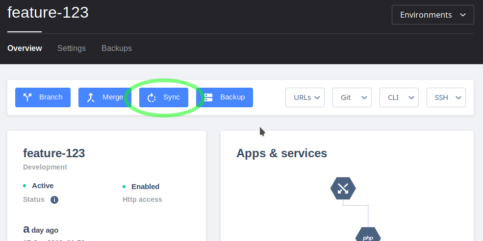
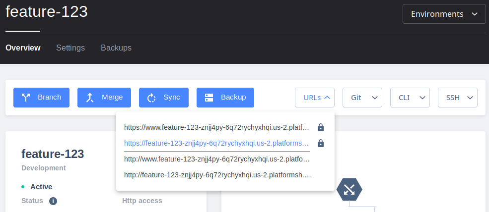

I have many developers, but only one test server.
Every branch in your project is its own isolated environment.
Every branch is a test server!

Branches inherit settings and data from their parents.
And you can resync the data from parents at any time.
Push to a branch, no other branches are affected.

Every environment gets its own domain.

Problem: I have many developers, but only one test server.
Script
Show project page with large tree of environments. Master, Integration, and various feature-x branches off of Integration
Overlay: Every branch in your project is its own isolated environment. Every branch is a test server!
Highlight Sync button on feature-x branch's page.
Overlay: Branches inherit settings and data from their parents. And you can resync the data from parents at any time.
Update with a new push, show the activity log of it building.
Overlay: Developers can push to their own feature branch without impacting others.
Show the URL dropdown, and a preview of the site. (May be hard to model.)
Overlay: Review each feature independently, internally or with your clients.
Show feature-x environment page, highlight Merge button.
Overlay: Merge each feature directly to production, or to a sprint-long integration branch.
Show integration environment page, highlight merge.
Overlay: When the integration branch is ready, merge to production.
Show build log on master branch. Highlight "reusing slug".
Overlay: With a fast-forward merge, the code is the same so the built application is the same. Just redeploy the exact same bits in production!
Overlay: Even on Friday.
Shows
Agile and sprint iterations
Freedom to make mistakes
Getting stakeholder feedback
Experiment with new architectures
Testing
Read-only containers
Build code on Git Push